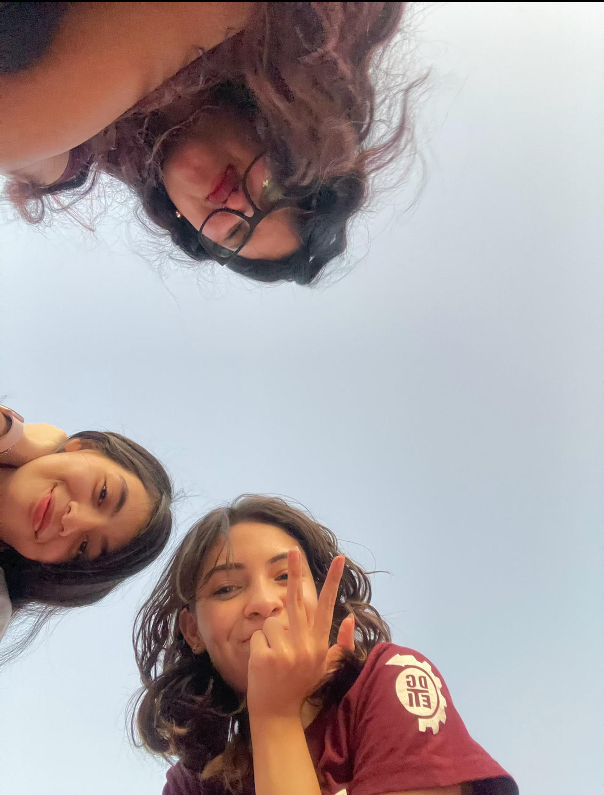

Desarrolladoras

Arechiga Amante de la cocina tradicional con un toque creativo.
Gonzales Experta en repostería, precisión y dulzura en cada creacion
Monarez Especialista en cocina internacional, siempre innovadora.
Juntas, un equipo √∫nico que mezcla tradici√≥n, t√©cnica y creatividad. üéâ